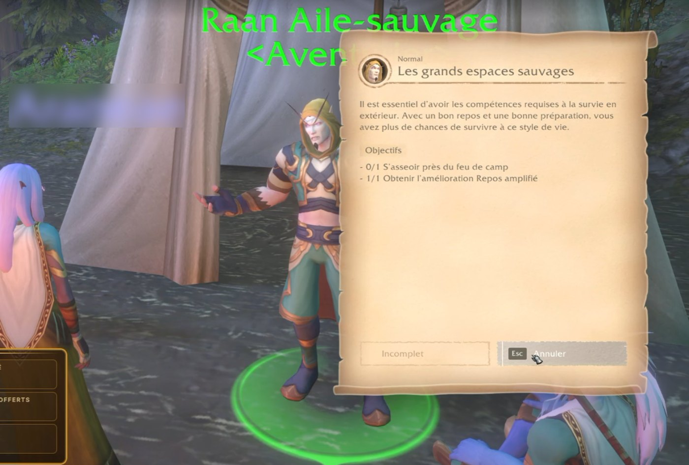

News › Les grands espaces sauvages
Astuce : la quête « Les grands espaces sauvages »
5 novembre 2026
Bloqué sur l'objectif « S'asseoir près du feu de camp » ? Ce n'est pas un bug : il faut s'allonger avant de s'asseoir.

La quête « Les grands espaces sauvages », donnée par Raan Aile-sauvage <Aventurier>, présente le camping de Forever. Elle a deux objectifs :
- Obtenir l'amélioration Repos amplifié.
- S'asseoir près du feu de camp.
Le second objectif pose problème à beaucoup de joueurs : s'asseoir simplement avec /sit (ou la touche X) près du feu ne le valide pas.
La solution
- Place-toi tout près du feu de camp.
- Tape /lay pour t'allonger.
- Puis tape /sit pour t'asseoir.
L'objectif se valide aussitôt, et tu peux rendre la quête.
Le camping, les feux et leurs bonus sont expliqués sur la page Bien débuter.